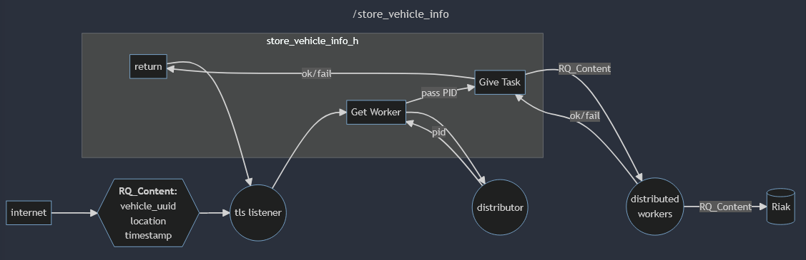

My Approach
Coding is Communication
One of my fundamental programming philosophies is that progrmaming is two different types of communication. You are communicating with a compiler, which have strict syntactical rules and rigid definitions. On this end of of the stick also live optimisation techniques and well established coding practices (e.g. building rusable containers). At the exact same time, you are communicating with the programmers who come after you (sometimes yourself!). These are two fundamentally different tasks, each difficult and vital to the art of good code. I constantly think about these two tasks while I code and peruse documentation, often pausing to ask myself if I am performing both to an acceptable level or if there are better tools available to me I am not using.
Coding is Fun, Especially When it Isn't

Programming, if you explain it in words, does not sound fun. "Yes, today I spent several hours writing then debugging about 200 lines of code. Every time I solved one bug a new one appeared. When I finally finished the only indication that my code worked was a few white-against-black lines in the terminal I've been wrestling with." But for me, that process can be fun if taken with the right attitude. I often joke "if your brain is broken Juuuussst right such that you can get reward chemicals from a new error message, you should learn to be a programmer." You have to take the small victories and recognize that they will add up to an impressive finished project someday.